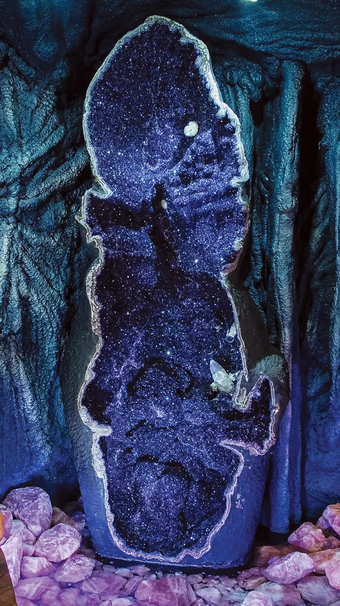
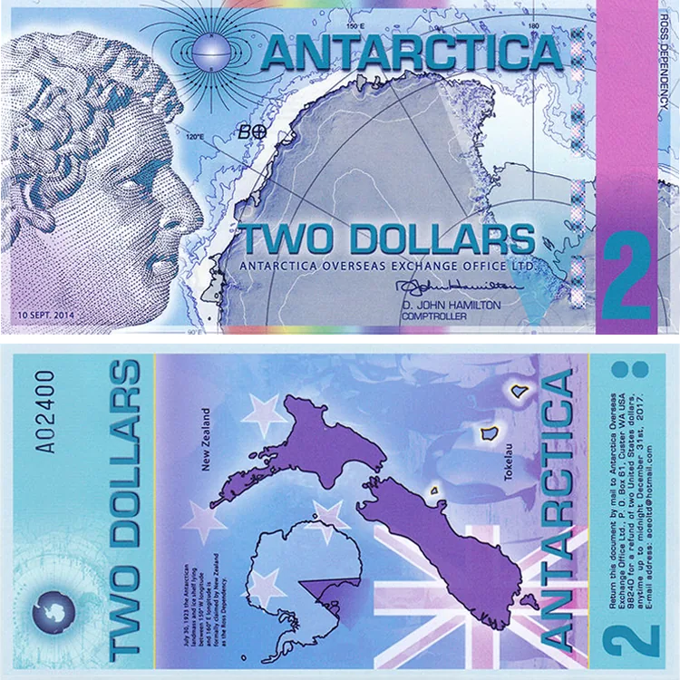

Forbidden knowledge
The eye let you through. What follows is what the old maps, the expedition logs and the stories say lies at the edge of the world. Some of it is on record. The rest is lore, handed down by the ones who went looking, and every file here says which it is.
Record documented · Legend handed down · Sighted ours
-
The wall
Draw the world from above the North Pole and Antarctica stops being a continent at the bottom of the globe. It becomes a ring of ice around the edge of everything. That is the azimuthal equidistant projection, the map in this site's own navigation, and the one Alexander Gleason printed as his New Standard Map of the World in 1892.
The legend begins where the map ends: a wall of ice two hundred feet high that runs the whole rim of the world, and that no expedition has been allowed to cross.
-
Hyperborea
The Greeks put a people beyond Boreas, the north wind, in a land of endless sun where Apollo spent his winters. Pindar sang of it. Herodotus wrote down how the Hyperboreans sent their sacred offerings south to Delos, wrapped in wheat straw and passed from hand to hand across the world. On our map it is the land above the way down.
-
Rupes Nigra
Gerardus Mercator's chart of the Arctic, published in 1595, puts a black magnetic rock at the North Pole: four islands around it, four rivers pouring between them into a whirlpool that drains into the earth. He took it from a lost book, the Inventio Fortunata. The chart is real and in the archives. The lore is that the rock is still there under the polar dark, and that it is why every compass on earth swings north.
-
Shells within shells
Edmond Halley, the comet's Halley, proposed to the Royal Society that the earth is hollow: an outer shell around inner ones, each with its own poles, which would explain why compasses drift. He suggested the aurora might be a luminous atmosphere escaping through the thin crust at the poles. A real paper by a serious man, and on the record. Look up on an aurora night: the light is still escaping.
-
Symmes' holes
John Cleves Symmes Jr. mailed a circular to colleges, scientists and governments:
I declare the earth is hollow, and habitable within.
He asked for a hundred brave companions to sail with him into the opening at the pole. Nobody funded the voyage. The openings are still called Symmes holes, and the lore is that they are still open. -
Agartha
Saint-Yves d'Alveydre wrote in 1886 of Agartha, a kingdom under the earth that keeps the knowledge the surface lost. In 1922 Ferdynand Ossendowski's Beasts, Men and Gods gave it a ruler, the King of the World. Our map puts the way down at the pole, and our vault behind it.
-
Vril
Edward Bulwer-Lytton's The Coming Race told of a people under the earth and the energy they wield, which he called Vril. He published it as a novel. The lore is that he was writing down what he had been told, and that the word outlived the book because the power never went away. The ticker on this site still reports the reserves.
-
Operation Highjump
The US Navy sent about 4,700 men, 13 ships and 33 aircraft to Antarctica under Admiral Richard E. Byrd, the largest expedition the continent has ever seen. That part is history.
The lore is what Byrd saw from the air: past the pole, a green valley warmed from below, written into a secret diary that was sealed before the fleet came home. Our expedition log on the home page picks up where the diary leaves off.
-
The treaty
Twelve nations signed the Antarctic Treaty: no military activity, no new territorial claims, science only. Anyone may visit and nobody may own it. That is what the document says. The lore reads it the other way: a fence, with everyone agreeing to stand on this side of it.
-
Foo fighters
Allied night-fighter crews over Europe named the lights that paced their planes foo fighters. They were reported, logged and never explained. The craft that crosses this site's hero is one of their descendants, and the ticker files every sighting.
-
−89.2 °C
The coldest air temperature ever measured at the surface of the earth, taken at Vostok in the dark of the Antarctic winter. The outpost's ticker reads it to you every day, as a reminder of what is on the other side of the wall.
-
Currency of no nation

Two dollars on the Antarctica Overseas Exchange Office: the continent on one side, the ice on the other. No nation printed it, because no nation owns the ground it shows. That is the treaty, folded into a note. It came into the outpost the way most things do, from beyond the wall.
-
The eye in the wall
It opened in the gate. Amethyst, with a slit of pale ice for a pupil, and it follows whoever looks at it. Nobody built it and nobody has seen it close for long. It let you through. It is watching you read this.
We don’t sell secrets
Only the gear people carry when they go looking for them. Everything in the vault goes through the gate by the book.
This page is lore: old maps, expedition records and the legends that grew from them, told the way the outpost tells them.